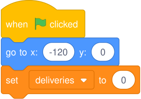
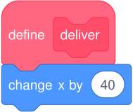
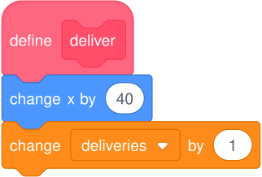
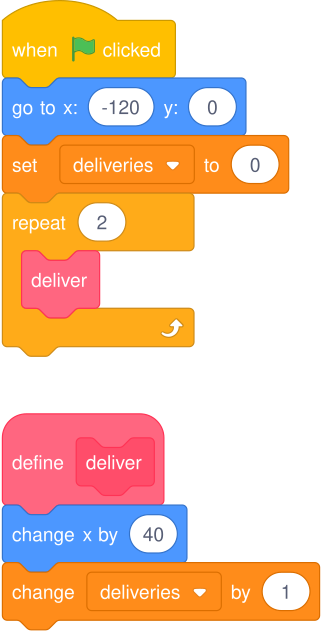
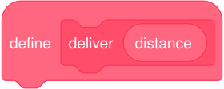
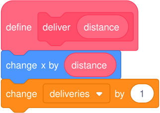
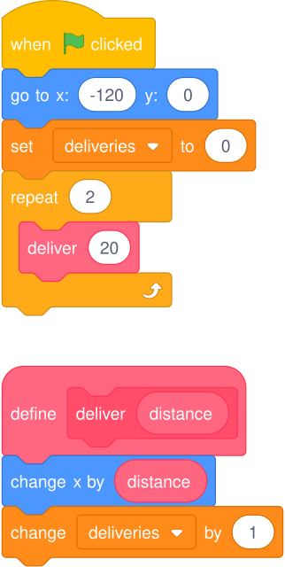

First name: __________ Last name: __________ Grade: __________
Build one delivery block, then give it a distance input to run two routes. This is ungraded practice.
You should see a package, a route and the deliveries counter.
Your answers save in this browser. Download your answers saves a PDF.
If Scratch is unavailable, use the paper version for predictions. Run the tests when access returns.
The x position tells you where the package is: left or right.
Click the green flag. Check x = −120 below the stage and deliveries = 0 on the stage.

These reset blocks are already in the starter. Check their numbers if your starting values differ.
Negative x positions are left of the stage centre.
A custom block groups instructions under one name.
The define deliver block will hold your delivery instructions.
One delivery moves the package 40 steps right.
From Motion, attach change x by 40 under define deliver.

From x = −120, one move reaches −80.
A variable stores a changing value. deliveries counts the moves.
From Variables, attach change deliveries by 1 below the movement.

Each delivery now moves once and counts once.
A loop repeats instructions. This loop runs deliver twice.

Keep define deliver as a separate script. The definition holds the instructions; the small deliver block runs them.
With movement 40 and repeat 2, the package starts at −120. Two moves add 80: −120 + 40 + 40 = −40. Each move adds one delivery.
| Action | Result |
|---|---|
| One delivery | Move right and count one |
Click the green flag. With movement 40 and repeat 2, expect x = −40 and deliveries = 2.
Count stays at 0? Check change deliveries by 1 inside define deliver.
Nothing moves? Put the small deliver block inside repeat.
What actual x and deliveries did Scratch show?
________________________________________________________________
Inside define deliver, change movement from 40 to 30.
Keep the counter change at 1. Use movement 30 for your next three tests.
Set repeat 1. Keep movement at 30.
Record your repeat 1 prediction and actual results.
________________________________________________________________
Set repeat 2. Keep movement at 30.
Record your repeat 2 prediction and actual results.
________________________________________________________________
Set repeat 3. Keep movement at 30.
Record your repeat 3 prediction and actual results.
________________________________________________________________
| Movement | Repeat count |
|---|---|
| 40 | 2 |
| 30 | 2 |
When movement changes from 40 to 30 but repeat stays at 2, which value stays the same?
________________________________________________________________
The final x position / The deliveries count
Use your repeat 3 results to explain the two blocks.
What does deliver do, and what does repeat 3 do?
________________________________________________________________
Fix one error and repeat its test.
If all tests agree with your predictions, run repeat 3 again to check.
Check the reset values, the deliver call inside repeat, and both instructions inside define deliver.
Which test did you repeat, what did you check or fix, and what result did you get?
________________________________________________________________
Keep movement at 30 and repeat at 3.
In Scratch, choose File → Save to your computer.
Use this filename, replacing Firstname and Lastname with your name:
G7_DeliveryPractice_Firstname_Lastname.sb3
An input gives a custom block a value. deliver (20) means move 20 steps; deliver (50) means move 50.

Your original practice file is already saved. These changes will go in a new file.
Drag the oval distance from the definition into the number box in change x by.

Each call supplies the distance. The counter still adds 1.
Use the oval from define deliver. Do not create a new distance variable.

Predict: −120 + 20 + 20 = −80. Two calls count 2 deliveries.
Click the green flag. With deliver (20) inside repeat 2, expect x = −80 and deliveries = 2.
If the move is still 30, replace the fixed number in change x by with the oval distance.
Check that the call says deliver 20 and both reset values are unchanged.
What actual x and deliveries did Scratch show with the distance input?
________________________________________________________________
Use deliver (20) inside repeat 3. Keep the same definition.
Record your Route A prediction and actual results.
________________________________________________________________
Use deliver (50) inside repeat 3. Keep the same definition.
Record your Route B prediction and actual results.
________________________________________________________________
Route A uses three 20-step deliveries. Route B uses three 50-step deliveries.
Use your test results to explain how the same definition runs both routes.
How did distance change the final x, and why did both routes count three deliveries?
________________________________________________________________
Leave deliver (50) inside repeat 3.
Choose File → Save to your computer.
Name the new file:
G7_DeliveryRoutes_Firstname_Lastname.sb3
Keep your earlier DeliveryPractice file unchanged.